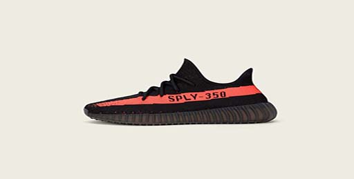
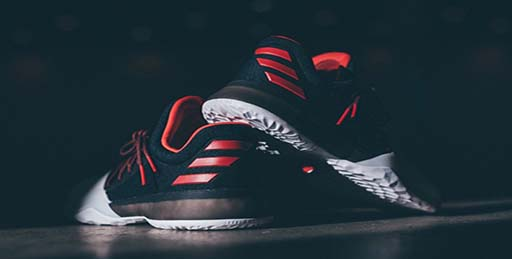

LLas YEEZY BOOST 350 V2 están confeccionadas con la mejor innovación de adidas y la inconfundible estética de Kanye West. Esta versión de la 350 V2 presenta un exterior de Primeknit en tonos negros. Una raya de color cobre, verde o rojo que lleva la marca ‘SPLY-350’. Una suela de goma semitraslúcida y paredes laterales de TPU crean un efecto impactante y proporcionan una tracción superior.
La entresuela de la YEEZY BOOST 350 V2 utiliza la innovadora tecnología adidas BOOST™ para crear una suela duradera, receptiva y resistente al impacto. Al mismo tiempo, el material Primeknit aprovecha las técnicas de tejido digital más avanzadas de adidas para brindar el ajuste de una segunda piel.
En nuestro país las YEEZY BOOST 350 V2 estarán a la venta en la tienda adidas Originals del Jockey Plaza, a partir de las 8 de la mañana. El precio es S/. 799.

Desde que la colaboración entre Adidas y James Harden empezó en 2o15, el jugador de los Rockets no había tenido su modelo propio de zapatillas. Hasta ahora. La marca alemana ha lanzado al mercado las ‘Harden vol. 1’. Con este calzado pretenden crear algo diferente a cualquier línea que haya lanzado Adidas.
La silueta de la zapatilla posee un tejido de punto negro superior, una zona delantera blanca de piel y pequeños detalles en rojo. Con este modelo, Harden quiere rememorar el triunfo que le llevaría a su segundo título del estado de California mientras estaba en el instituto. El escolta anotó 22 puntos, capturó 8 rebotes, dio 3 asistencias y robó dos balones. Estas estadísticas aparecen en la plantilla derecha, mientras que la fecha del campeonato (24 de marzo de 2007), se pueden apreciar en la plantilla de la izquierda.
Las Pioneer de Harden han sido fabricadas con un software generativo avanzado, con el que se ha analizado los patrones de acentuación del jugador de los Rockets cuando está en la cancha. Con ellas, la marga germana ha querido crear un diseño que sea específico para las bruscas rupturas que realiza James en los partidos y sus rápidos cambios de ritmo.